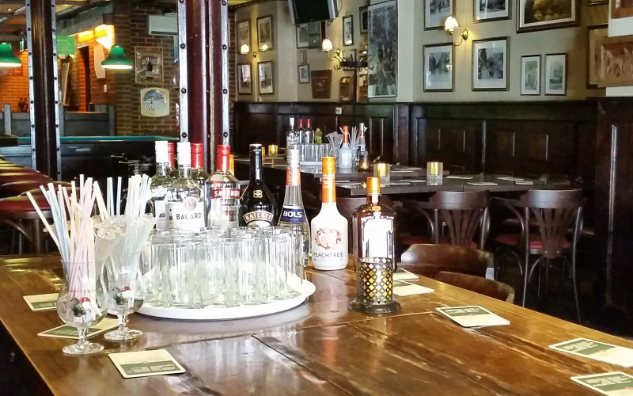

Twijnstraat 43, Utrecht
Het Stichtse, bruin café aan de Twijnstraat
Een echt familiebedrijf zoals je niet verwacht in een stad als Utrecht, en een bekend adres onder vele generaties studenten en biljarters.

- Pool
- Biljart
- Darts
- Bordspellen
Welkom bij café De Stichtse Taveerne
Café de Stichtse Taveerne, kortweg het Stichtse, bestaat al ruim 40 jaar. Niet in het roerige centrum, maar verborgen tussen woonhuizen en winkels in de Twijnstraat.
De groene luifel aan de Twijnstraat is smal, maar de zaak loopt helemaal door tot aan de gracht. Hier kan men in de zomer zelfs terecht op een bescheiden terras, uitkijkend op langsvarende bootjes.
Daarnaast is het een gezellige bruine kroeg om lekker door te zakken. Een aanrader voor iedereen die een gezellige omgeving wenst.
Aan het roer staat Frank Nieuwenhuijs, die is opgegroeid in het café dat zijn ouders uitbouwden tot een volwaardig horecabedrijf.
Een echt spelletjescafé
Naast goed onderhouden biljarttafels, pooltafels en dartbanen is er ook een kast vol spelletjes. En er spelen 3 dartteams.

Biljart
Goed onderhouden biljarttafels.
Pool
Pooltafels. Deze kunnen niet gereserveerd worden.
Darts
Dartbanen, en 3 dartteams die er spelen.
Bordspellen
Een kast vol spelletjes.
Uit de spelletjeskast
- Triviant
- Poker
- Backgammon
- Carcassonne
- Scrabble
- Stratego
- Risk
- GO
Het Japanse spel GO staat er dus ook gewoon tussen.

Recepties
De Stichtse Taveerne is ook geschikt voor verjaardagsborrels en andere recepties, tot 20 personen.
Naast de borrel en standaard hapjes zoals een bittergarnituur, kunnen in overleg hapjes verzorgd worden.
Interesse? Neem telefonisch contact op of stuur een mailtje.
Er kunnen bij ons geen pooltafels gereserveerd worden.
Geschiedenis
Café de Stichtse Taveerne bestaat al 42 jaar.
Niet in het roerige centrum, maar verborgen tussen de winkels en woonhuizen in de Twijnstraat. Het pand is een voormalige knopenfabriek met veel historie en een beschermd stadsgezicht.
In de kelder, vroeger de grondstoffenopslagruimte voor de knopen, was een theater waar Utrechtse cabaretiers zoals Herman Berkien, Hennie Oliemuller en Tineke Schouten hun carrière startten. Tegenwoordig herbergt het een restaurant, De Heeren van Leeuw. Het restaurant is via de trap in het café te bereiken, of buitenom via de werf.
Agenda
Wat er in het café gebeurt: darten, damesbiljart en afwijkende openingstijden.
Darten
Onze dartteams spelen hier hun thuiswedstrijden.
Damesbiljart
Tijdens het damesbiljarten zijn er 2 tafels gereserveerd van 15:00 tot 19:00 uur.
Afwijkende openingstijden
Is de Stichtse een keer gesloten, dan staat dat hier.
Openingstijden en contact
| Maandag t/m donderdag | 13:00 - 01:00 |
|---|---|
| Vrijdag en zaterdag | 13:00 - 02:30 |
| Zondag | 14:00 - 19:30 |